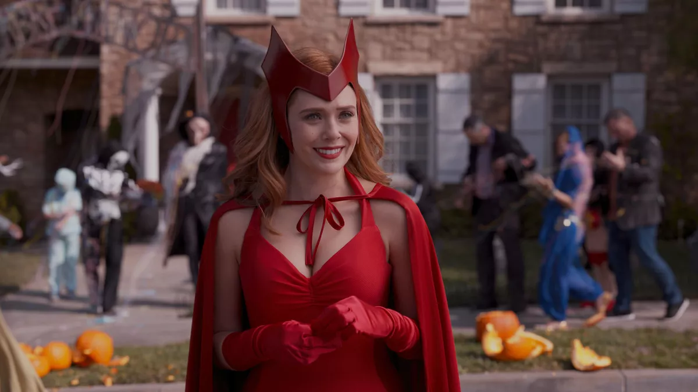

by Gabriel Borja
Earlier in the month, we were introduced to the first ever installment in the Phase 4 Marvel Cinematic Universe as well as the first ever Marvel tv show released on the Disney+ streaming platform. I will be writing about my thoughts and justifications about my love for the MCU. It has been about a year and a half since we have seen the latest installment in the MCU. Leaving off with a giant cliffhanger in Spider-Man: Far From Home.
Wanda
My initial thoughts on WandaVision surpassed what I expected the show to be. Although excited, I was not quite sure of the direction that the narrative was intending to take but after seeing the latest 5 episodes. I can say for sure that I and every one in the audience, both in the show and outside the show, are in for a wild ride.
We get to see a deeper look into the life of Wanda Maximoff and Elizabeth Olsen has continued to give an outstanding performance at her 5th appearance in the MCU. Noting Age of Ultron as her debut back in 2015, 6 years before WandaVision aired.
I am excited to see where the show is going, especially with the Disney-Fox acquisition behind them; giving them the opportunity to start establishing Fox-related titles in the bigger cinematic multiverse.
